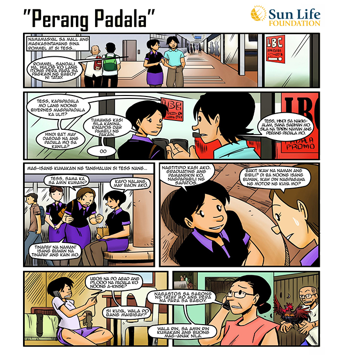
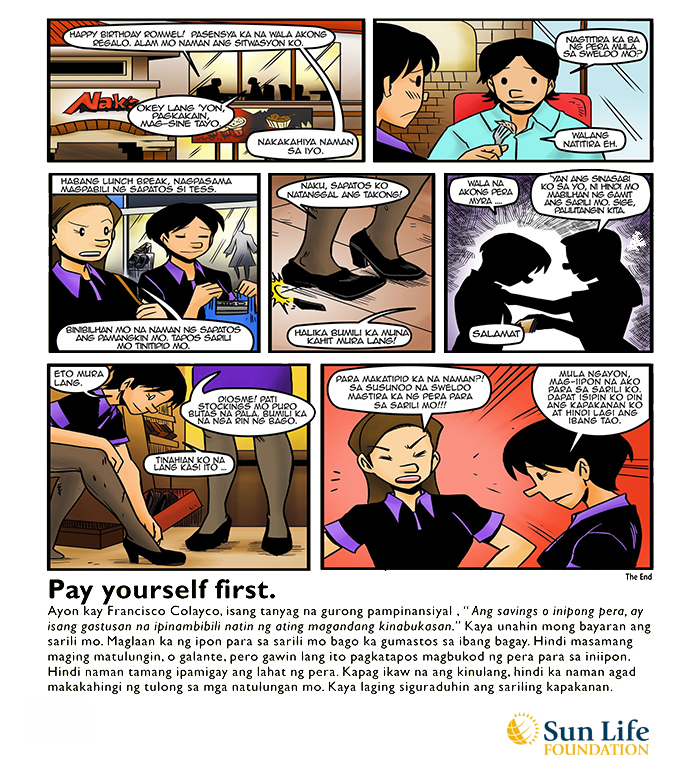

If you are like the majority of the Filipinos, saving money is a habit that is easier said than done. The reasons usually range from a meager take-home pay, to an unexpectedly high utility bill, to a foot-long credit card tab. Or sometimes, one just doesn't realize that the “I must have my cup of coffee” every day can result to as much as ₱1,000 drain every month. Whatever the reason, at the end of the month, the typical Filipino usually wonders: Where has my money gone?
The solution for this quite simple. Say this mantra: I WILL PAY MYSELF FIRST. Regularly set aside an amount, say ₱2,000, and consider this as a debt you owe to yourself. Along with paying your electricity, water, telephone, and credit card charges, deposit this amount in your savings account every month and before you know it, voila, you have acquired the habit of saving regularly.
So now you’re saving ₱2,000 every month, and hence ₱24,000 every year. The next step is to put this in an instrument where it can grow. You have two options here: one is to keep you money in the bank where you earn approximately 2% per annum, or, you may choose to transfer part of your savings to a potentially higher-yielding investment instrument like bonds, stocks, funds and other portfolios.
Making savings and investing a regular habit. Filipinos usually spend first and save whatever is left. Reverse that mindset and pay yourself first. This way, you’re not only saving for a rainy day, but also building up your wealth for the future.
See below for some comic strips.

